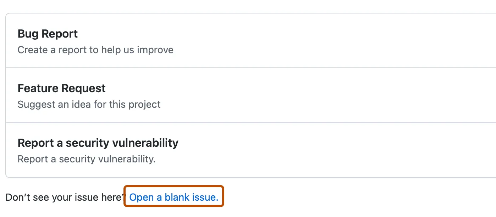
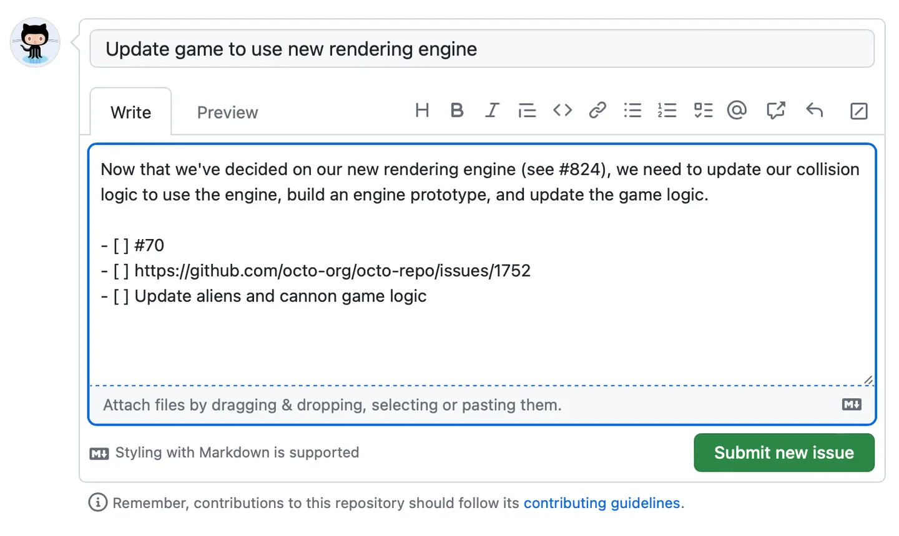

{kind=link}
{kind=link}
{kind=link}
{kind=link}
{kind=link}
{kind=link}
{kind=link}
{kind=link}
{kind=link}
git commit -m "Add a new file. close #7" 9 Issues
9.1 Overview
GitHub is famous for helping people work together on code. But to work well together, you need to talk and organize tasks. GitHub makes this easy with a feature called GitHub Issues. This chapter shows you how to use GitHub Issues for organizing and following a task.
GitHub issues are a powerful and often used feature of the platform. Think of the issues for a project as its bug tracker. Even for projects that are not pure software development, we can co-opt this machinery to organize our to-do list more generally.
The basic unit is an issue and you can interact with one in two ways. First, issues are integrated into the project’s web interface on GitHub, with a set of options for linking to project files and incremental changes. Second, issues and their associated comment threads appear in your email, just like regular messages (this can, of course, be configured). The result is that all correspondence about a project comes through your normal channels, but is also tracked inside the project itself, with good navigability and search capabilities. For software, issues are used to track bugs and feature requests. In a data analysis project, you might open an issue to flesh out a specific sub-analysis or to develop a complicated figure. In a course, we could use them to manage homework submission, marking, and peer review.
Issues can be assigned to specific people and they can be labeled, for example, bug, simulation-study, or final-exam. Coupled with the ability to cross-link issues and the project files or file changes, you have the power to document why things have happened in the past and to organize what needs to happen in the future.
9.2 Benefits of issues
Organized research tasks
Issues help scientists keep track of their research tasks, experiments, and observations in an organized and structured manner.
Easier collaboration
Issues facilitate seamless collaboration among scientists, allowing them to work together on experiments, data analysis, and research projects regardless of geographical locations.
Clear Communication
Scientists can use issue descriptions and comments to communicate their findings, hypotheses, and insights, fostering a transparent and clear dialogue within their research teams.
Structured Problem Solving
Issues enable scientists to break down complex research problems into smaller, manageable tasks, making it easier to solve challenges step by step.
Documentation and Records
By creating issues, scientists create a comprehensive record of their research progress, methodologies, and results, providing valuable documentation for future reference and publication.
Task prioritization
Researchers can assign labels and milestones to issues, helping them prioritize tasks, experiments, and analyses based on urgency and importance.
Traceable Changes
Scientists can track changes made to issues, allowing them to see the evolution of ideas, experiments, and conclusions over time.
Error Tracking and Resolution
Issues are ideal for identifying, documenting, and resolving errors, ensuring accuracy and reliability in scientific experiments and data analysis.
9.3 Features - Overview
- You can organize issues by labels, for example
bug. - You can assign responsibility for an issue to a team member.
- You can add the issue to a project milestone.
- Issues can be combined in Issue boards
- Issues can be sorted (by due date, label priority, etc.)
- Issues can be transferred between repositories
- Issues can be crosslinked e.g., in commit messages:
git commit -m "add missing data, close #37" - Issues can send automated email notifications
- Issues can be exported and archived
(more details here)
9.4 Step-by-step
9.4.1 Prerequisites
To make an issue, you need a repository. You have the option to use a repository you already have permission to write in, or you can create a new repository. The repository must have issues enabled. If you want more guidance on making a repository, refer to the chapter on first steps with Git. If you need help with turning on issues in case they’re currently turned off in your repository, take a look at the section titled “disabling issues”.
9.4.2 Opening a blank issue
First, create a new issue. There are multiple ways to create an issue. You can choose the most convenient method for your workflow. This example will create an issue from a repository on GitHub. For more information about other ways to create an issue, see the section “Creating an issue” in the GitHub documentation.
- On GitHub, navigate to the main page of the repository. For example, the main page of the GitHub repository of this guide can be found here.
- Under the repository name, click Issues (see Figure 9.1).
- On the following page, click the green New issue button.
Try it!
Open a new Issue in the repository of this online guide (requires a GitHub account).
If the repository uses issue templates (details below), click the green Get started button next to the type of issue you’d like to open (see Figure 9.2). If the kind of issue you want to create isn’t listed among the choices, simply click on “Open a blank issue”.

9.4.3 Filling in issues
- Choose a descriptive title for your issue. The title should convey what the issue is about.
- Include a description that explains why you’re creating this issue and any information that might help to solve it. For instance, if it’s about a bug, explain how to reproduce the bug, what you expected to happen, and what actually happened. You have the option to use Markdown to add special formatting, links, emojis, and other things. For more information, see the section “Writing on GitHub” in the GitHub documentation.
- You can also attach files or images by dropping, selecting or pasting them into the issue.
- When you’re done, click the green Submit new issue button. You can still edit any of the fields after creating the issue.
On the right-hand side, you’ll see options to assign someone to the issue, add labels, add the issue to projects, or add the issue to milestones. We’ll explore these features in more detail below. You can also set all of these options after you submitted the issue.
9.4.4 Submitting your issue
Click Submit new issue to create your issue. You can edit any of the above fields after creating the issue. Your issue has a unique URL that you can share with team members, or reference in other issues or pull requests.
9.5 Features of Issues
9.5.1 Editing issues
You can always edit the title and description of your issue after you submitted the issue.
On the right side of the title, you’ll notice an Edit button. This comes in handy if you ever need to change the title of the issue as the discussion evolves over time or you want to make the title more descriptive. Even if you edit the issue, the issue number will always remain the same.
What if you decide to modify the main text of your issue or a comment after you’ve submitted it? No problem at all. Once your issue is submitted, a blue bar will appear at the top of your comment. This bar displays your username and the comment’s date. Toward the right side of this blue bar, you’ll notice three dots (). If you click on those dots, you’ll find the option to edit your comment.
9.5.2 Communicating in issues
9.5.2.1 Commenting issues
The major benefit of issues is that they serve as platforms for conversations with yourself and others. Once an issue has been submitted, you can continue the conversation by adding more comments within that issue. For example, you might ask a question, and someone else could respond with a solution or idea. They might even include links to related issues or external resources that could be helpful.
9.5.2.2 Mentioning people
You can also mention people in issue comments using the @ symbol. Anyone who is part of the repository will automatically receive email notifications about new comments. Tagging specific users with the @ symbol will also send them an email, making it a useful way to involve individuals who might not already be closely following the entire repository. In a public repository, you can tag any GitHub user, while in a private repository, they need to have appropriate permissions.
To connect related issues in the same repository, you can type # followed by part of the issue title and then clicking the issue that you want to link.
9.5.2.3 Timeliness of issues
Whenever a new comment is added to the issue thread, a new date will be displayed in the blue bar at the top of the issue. This provides a convenient way to assess the timeliness of ongoing discussions.
9.5.2.4 Referencing comments
Another useful feature is the ability to click on the date of an issue’s comment, causing the URL in your browser to update. This updated URL lets you link directly to a particular comment in the issue thread. This is very handy when you want to share a specific comment with someone, saving them the trouble of scrolling. Alternatively you can also you can also click on the three dots on the right of the blue comment header () and select the option to copy the link for that specific comment.
9.5.2.5 Using Markdown syntax
GitHub allows you to use Markdown syntax in your issue comments, which provides an easy way of formatting text. For example, you can create headers using the # symbol (# Header 1, ## Header 2, and so on). For a complete overview of Markdown syntax, you cn check out this GitHub documentation.
9.5.3 Adding a task list
One way of using Markdown syntax in GitHub issues, is creating a task list. It can be helpful to divide big problems into smaller tasks or group related issues together. A task list is a set of tasks that each appear on a separate line with a clickable checkbox. You can select or deselect the checkboxes to mark the tasks as complete or incomplete. You can make a task list by putting - [ ] in front of list items. You can refer to other issues using their number or URL. You can also use plain text to keep track of tasks without issues and turn them into issues later if needed. For more information, see the section “About task lists” in the GitHub documentation.

9.5.4 Adding labels
Add a label to categorize your issue. You can apply labels to an issue on the right side of the issue thread or when creating a new issue (see Figure 9.6). For example, you could apply a bug label and a good first issue label to indicate that an issue is a bug that a first-time contributor could tackle. Users can filter issues by label to find all issues that have a specific label. For example, you can find a list of issues for this repo here. For information, see the section “Managing labels” in the GitHub documentation.
9.5.4.1 Creating a label
Anyone with write access to a repository can create a new label or customize existing labels.
- On GitHub, navigate to the main page of the repository.
- Under the repository name, click Issues or Pull requests.
- Above the list of issues or pull requests, click Labels.
- To the right of the search field, click New label.
- Under “Label name”, type a name for your label.
- Under “Description”, type a description to help others understand and use your label.
- Optionally, to customize the color of your label, edit the hexadecimal number, or, for another random selection, click .
- To save the new label, click Create label.
9.5.5 Adding milestones
You can add a milestone to track the issue as part of a higher-order project target. A milestone will show the progress of the issues as the target date approaches. For more information, see the section “About milestones” in the GitHub documentation.
9.5.6 Assigning the issue
To clearly communicate responsibility for an issue, you can assign the issue to a team member of your project or organization.
9.5.7 Adding projects
You can add the issue to an existing project and populate metadata for the project.
Learn more about projects
9.5.8 Issue templates
GitHub issue templates are predefined formats for creating new issues in a repository. They help with the process of opening new issues by providing a structure for the information that contributors should include when reporting a bug, requesting a feature, or any other type of issue. You can create multiple templates for different types of issues, such as bug reports, feature requests, or general inquiries Each template is a Markdown file (.md) with predefined sections, such as description, steps to reproduce, expected behavior, actual behavior, etc.
When a user opens a new issue, GitHub automatically displays the template content in the issue description field. Users can then fill in the required information based on the template.
To create a new template follow these steps:
- Navigate to the repository on GitHub.
- Click on the Settings tab.
- Under the General tab, in the Features section, find the Button labeled: Set up templates
Here you will find predefined templates by GitHub, but also the option to create a new issue template from scratch.
9.5.9 Linking to an issue
You can link to an issue directly from the command line! You can link a pull request, branch or commit to an issue to show that a fix is in progress and to automatically close the issue when the pull request, branch or commit is merged. For example:
This closes issue number 7 of your repository. (if committed to the default branch)
9.5.9.1 Linking to an issue using a keyword
You can link to an issue by using a supported keyword in the pull request’s description or in a commit message. The pull request or commit must be on the default branch. Possible keywords are:
closeclosesclosedfixfixesfixedresolveresolvesresolved
For further information, see this chapter of the GitHub docs.
9.5.10 Disabling issues
If you want to disable issues for your repository, you can easily do this in your repository’s settings.
- Navigate to the repository on GitHub.
- Click on the Settings tab.
- Under the General tab, in the Features section, find the checkbox related to issues.
- Uncheck or disable the issues feature.
9.6 Strategies for Issues
Most repositories on GitHub have Issues. But should you use Issues in every project? It’s helpful to think about why you’re using them.
9.6.1 Issues for bug reporting and feature requests
If you’re using Issues for typical things like reporting and fixing problems in code or adding new features, it’s a good idea to keep the project open to the public. You can have all the discussions related to that project inside it.
9.6.2 Issues for internal conversations
If you’re using Issues for internal conversations (for example, discussions within a research group), you might want to keep the repository private at first. But here’s something to consider: Do you plan to make the project public when you’re ready to share your research with the world? Changing a project from private to public (or the other way around, which you can do in the project’s settings) not only makes the code and files public but also all the discussions in the Issues. That’s okay, but it adds some things to think about in terms of what’s being talked about in those discussions.
9.7 Further Reading
9.8 Acknowledgements
| Authors | Title | Website | License | Source |
|---|---|---|---|---|
| Lowndes and Robinson (2022) | Openscapes Champions Lesson Series | CC BY 4.0 |